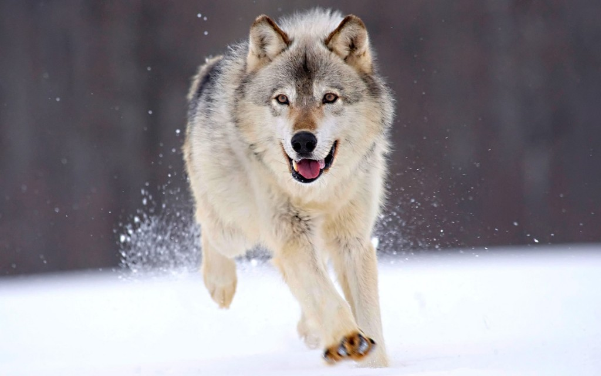

Sói Ethiopia hay còn gọi là chó rừng đỏ Ethiopia, tên khoa học là Canis simensis là một loài động vật có vú trong họ Chó, bộ Ăn thịt. Loài này được Rüppell mô tả năm 1840.[1] Đây được coi là loài sói hiếm nhất trên thế giới hiện nay với chỉ khoảng từ 300 đến 500 cá thể sống chủ yếu ở các vùng núi ở Ethiopia. Trong suốt nửa thế kỉ qua, chính vì những bất ổn chính trị xã hội tại quốc gia này, cùng với nông thôn hóa và bệnh dịch đã khiến loài sói Ethiopia giảm đáng kể, đẩy chúng đến bên bờ vực tuyệt chủng. Gần đây, chính phủ của quốc gia Đông Phi này đã tiến hành Chương trình bảo tồn Sói Ethiopia nhằm gia tăng số lượng và bảo vệ loài sói này trước nguy cơ tuyệt chủng.
Sói vàng châu Phi (Canis anthus) là một loài chó hoang dã thuộc chi Canis, họ Canidae, bộ Carnivora. Phân bố tại Bắc Phi. Loài này thích nghi với cuộc sống sa mạc
Chó sói phương Đông (danh pháp hai phần: Canis lycaon) là một loài chó sói thuộc chi Chó trong họ Chó. Loài này sinh sống ở Bắc Mỹ. Đây là loài bản địa phía đông Bắc Mỹ từ Pleistocene.[2] Nó dường như có mối quan hệ gần với chó sói đỏ.